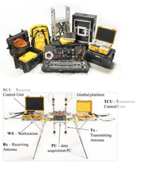
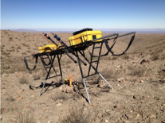

Technology explained (ADR Technology-Science)
Introduction
Adrok develops and uses advanced technology to supply geophysical services for locating, identifying and mapping subsurface natural resources (minerals, oil, gas and water). Adrok’s core technology is called Atomic Dielectric Resonance (“ADR”).
Atomic dielectric resonance (ADR) technology was developed by Dr Colin Stove, as an improvement over synthetic aperture radar (SAR) and ground penetrating radar (GPR) to achieve deeper penetration of the Earth’s subsurface and high vertical resolution through the creation and use of a novel type of coherent beam. ADR technology is faster, greener, cheaper and, an alternative to the conventional methods providing geophysical services.
ADR is used as a geophysical technique to provide a precision instrument for the accurate geological recognition of rock layers and identification of rock types by transmission through the rock medium as well as reflection from each subsurface rock layer1.
Adrok’s technology has been developed to provide data outputs relating to: (i) stratigraphy (like seismic imagery); (ii) information on rock characteristics (like well logs); and (iii) rock petrography (like cores). It measures subsurface (a) dielectric permittivity; (b) spectral (energy, frequency and phase) and (c) material resonance, from ground level, without physically boring the ground. These electrical measurements produce what Adrok has dubbed “Virtual Boreholes”.
Background Science of ADR technology
Adrok’s proprietary Atomic Dielectric Resonance (“ADR”) technology is based on the principle that different materials will reflect and absorb electromagnetic radiation (radio-waves, microwaves) at specific frequency and energy levels. The ADR geophysical system transmits a (patented) conditioned beam that resonates and reacts with the sub-surface materials. The returning resonant energy response is accurately received, in time and space, and measured in terms of energy, frequency and phase relationships. Data resolution is many times greater than acoustic imaging methods such as seismic, ultrasound or other radar imaging such as ground penetrating radar (GPR).
An ADR beam transmitted through the ground is a pulsed, confocal beam (like a long, narrow inverted cone in shape) of coherent (in-phase) radio waves and microwaves, producing minimal dispersion through its confocal and resonant mased nature1. The transmitted ADR beams have two components: a long wavefront standing wave to achieve deep penetration and shorter resonance waves within the standing wave to enhance vertical resolution1. The transmitted ADR beams typically operate within the frequency range of 1–100MHz. ADR technology uses directional electromagnetic radiation as resonating transmitting and receiving beams of energy1.
When rocks of different compositions and textures have been exposed to pulsed beams of wide-band, maser light conditioned dielectric resonance produce a range of differing atomic dielectric energy and frequency responses detectable by suitable receivers1. Conditioning the beam by dielectric optics creates a synthetic lens effect so that the sensors appear to have much longer chambers with wider apertures than their actual physical size1. This effect produces narrow coherent beams of pulsed and mased radio waves and microwaves, which are good for illuminating target interfaces and materials1.
The recorded data describe how rocks and minerals, including hydrocarbons, interact with the beam as it passes through them and pinpoints their composition1. The technology measures the dielectric permittivity of the subsurface as well as characterizing the nature of the rock types based on analysis of both the spectroscopic and resonant energy responses1.
Applications of ADR Technology
ADR technology finds applications in a variety of different fields, from minerals, oil and gas exploration to water discovery and geotechnical purposes. ADR technology can be applied in the field using the field equipment “ADR Scanner” but also, in the laboratory through the “Typecasting Chamber”.
Field
The field survey equipment is called “ADR Scanner” (Figure 1). It consists of one transmitting antenna and one receiving antenna, the antennas gimbal platform, the Receiver Control Unit (RCU), the Transmitter Control Unit (TCU) and the data acquisition computer. Data acquisition is relatively quick as the ADR Scanner and equipment are small and mobile.
 Figure 1: ADR field equipment “ADR Scanner”.The ADR signal generator produces a pulse of electromagnetic energy that is fed to the transmitting antenna. The transmitting antenna conditions the signal for propagation into the ground. Once the signal has been sent to the transmitting antenna a signal is sent to the receiving control unit to synchronise collection of the subsurface reflected data which is collected through the receiving antenna from different subsurface rock layers and mineral structures. The receiving control unit collects the signal from the receiving antenna and converts it into a form that can be read and stored on the data logging computer.
Scans
There are three different types of scans, i.e., Wide Angle Reflection and Refraction scan (“WARR”), Profile Scan (“P-Scan”), and Stare scan (“Stare”).
For P-Scans the two antennas are moved parallel to one another along the full scan line length. P-Scans are profile scans of the subsurface collected by the ADR system from ground level. This scan produces a 2-dimensional cross-sectional image of the subsurface that offers opportunity for structural and stratigraphic mapping of the sub-strata.
For WARR scans the receiver antenna is left permanently attached to a tripod platform, while the transmitting antenna is moved away from the stationary receiver along a full scan line length. WARRs are used for triangulating accurate depths.
Stares are conducted by having the two antennas at a fixed point; spacing varies depending on the depth of penetration, between transmitter and receiver sensors, with apertures at an elevation of 400mm above the ground. The stares penetrate using a narrow beam giving high resolution and precise data regarding the composition of the section it is penetrating.
 Figure 3: Example of ADR field equipment ready for conducting a Stare scan in a rugged terrain with the antennas positioned at an angle.Processing of the received ADR signal
The data logged in the field is then returned to the Adrok Processing Centre for analysis. After the signal is quality controlled it is ready for processing. Processing involves two major steps; the first is to conduct WARR analysis to produce depth information from the time registered image. Secondly, the image is split into equal sub-layer components where it can be spectrally compared to the database of materials. Finally, the sub-layer images are processed through Adrok’s proprietary Weighted Mean Frequency and Mean Energy algorithms.
The analysis of the returned ADR signals from the subsurface to the ADR receiving system is performed by Fast Fourier Transform (FFT) analysis of the received spectrum. This results in mathematical and statistical analyses of the received spectrum and the recognition of energy, frequency and phase relationships.
Lab
ADR technology needs to train on known geology to build up a reference database against with to correlate data from new unknown survey locations. The ADR signature of the materials likely to be encountered is determined by measurements of specimens (rock samples or drill core samples) in a typecasting chamber and then, the ADR field survey data is mathematically compared to the database.
Typecasting technique is a term used by Adrok, which refers to laboratory based processes of training the Adrok equipment to create a geological signature from a client provided sample. Adrok take an adaptable approach to data gathering and are able to work with samples provided by the client in a laboratory environment in addition to, or as an alternative to, carrying out a survey on a known site so that existing site data can be compared with that produced by Adrok. This quantifiable information is used to create a reference database against which site gathered information can be compared. The basic procedure is: acceptance of samples from client, lab typecasting data collection and analysis of signatures using distinct methods.
The laboratory equipment consists of the typecasting chamber, the pulse generator (transmitter unit), the oscilloscope (receiver unit) and one data logging monitor.
Data collection is conducted by placing the rock samples in Adrok’s Typecasting Chamber, as shown on Figure 4. The specimen is fully irradiated using Adrok’s resonant energy beam. The recordings from each rock sample allow Adrok to measure a unique spectroscopic signature based on energy, frequency and phase relationship.